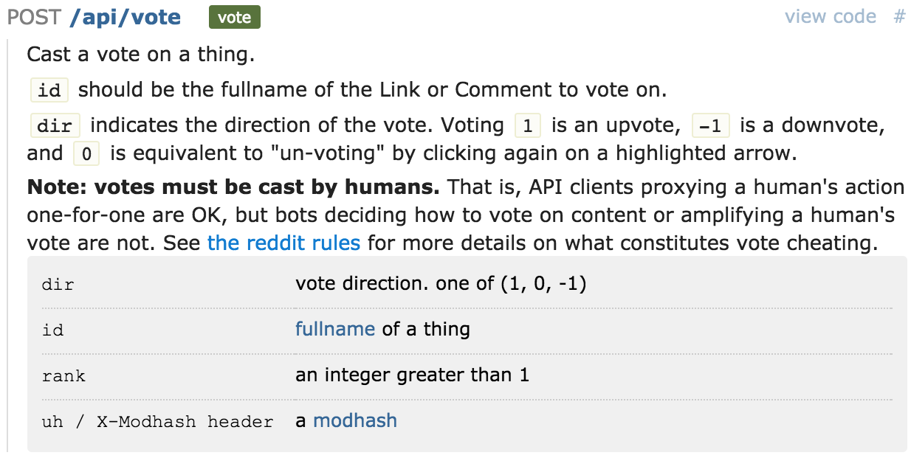
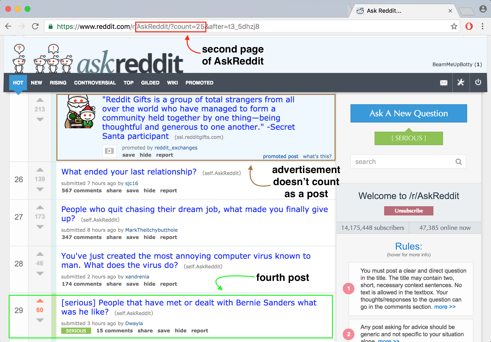
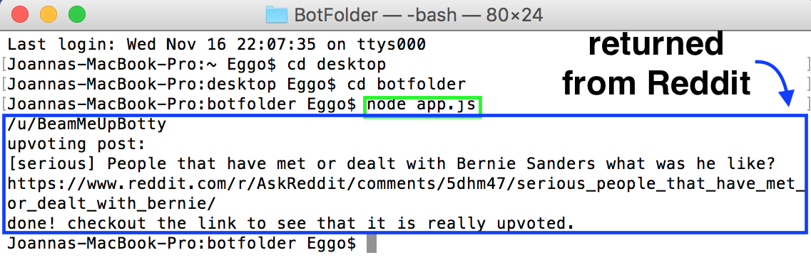

We now know how to make posts on Reddit, but what's that? You want to never post anything and want to just laze and lurk? Well, we can do that too!
Here is the code for upvoting the fourth post on the second page of /r/AskReddit.
The initialization and login process is the same as before. What's new is the scope. Since we are using /api/v1/me, we will need identity in the scope. Requesting a subreddit's hot page with /r/subreddit/hot requires read in the scope. We are also using /api/vote, which requires vote in the scope.
We go to the Subreddit of our choosing by getting a promise for a listing of that Subreddit with the code, reddit('/r/askreddit/hot').listing();. We go to a certain page on that Subreddit depending on how many times we write the code return slice.next();. Since we want to go to the second page, we call it once. We can call it again to move to the third page. Note that a slice is 25 posts, which is the default posts per page for a Reddit account. If this value is changed for your account, running the code may cause a different post to be upvoted.
We choose which post on that page to upvote using slice.children[index]. It is numbered as an array, so the first post has an index value of 0, the second post has an index value of 1, and so on. In our case, since we want to upvote the fourth post, we put in an index value of 3. We save the post as upvoteThis to use later.
The upvoting is done by a POST request using /api/vote. Once again, we can consult the API documentation to figure out what parameters we need and what values they should be. Below is the part of the documentation we're presently concerned with.
p
According to the documentation, dir is given a value of 1 to upvote, 0 to cancel any upvotes or downvotes, and -1 to downvote. We want to upvote a post, so we pass it a value of 1.
To get the fullname of a post, we must know the type of post it is (link or text) and its unique ID. The fullname is in the format type, underscore, ID. For example, a link post might have the fullname t3_15bfi0, with t3 indicating it is a link post, and 15bfi0 being its unique ID. We pass the fullname (upvoteThis.kind + '_' + upvoteThis.data.id) to the parameter id, in order to indicate which post to upvote.
And that's all there is to it! Let's look at the result. Check that the post was indeed upvoted by going to the second page of /r/AskReddit.
p
We can also confirm that the action occurred by checking the console. We log to console our username, the title of the post we upvoted, and the URL of the post.
p
Now we can post or lurk to our heart's content using Reddit's API! One last thing to be aware of is that by default, accounts do not show posts marked age 18+. The script above goes through all posts, including age 18+ posts. To ensure consistency between expected and actual results, accounts should display posts marked age 18+. You can change the option to display or not display such posts in preferences, under content options, first box.
p